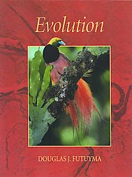

AB: ¿Qué es la selección natural y cómo es ella central a la teoría de la evolución?
Futuyma: La selección natural es el proceso por el cual una especie se adapta a su medio ambiente. La selección natural lleva al cambio evolucionario cuando individuos con ciertas características poseen una tasa de supervivencia o reproducción más alta que los otros individuos de la población y pasan estas características genéticas heredables a su progenie. Puesto en forma simple, la selección natural es la diferencia consistente en la supervivencia y la reproducción entre genotipos diferentes, o hasta en genes diferentes, en lo que podríamos llamar el éxito reproductivo. [Un genotipo es un grupo de organismos que comparten un conjunto genético específico.]
La selección natural es importante porque es la idea central que surgió de los estudios de Charles Darwin y de Alfred Russel Wallace, y que explica al diseño en la naturaleza. Es el proceso que es responsable por la evolución de las adaptaciones de los organismos a su medio ambiente.
El libro de Darwin Sobre el Origen de las Especies por Medio de la Selección Natural causó una gran controversia cuando fue publicado en 1859. Por supuesto, la evidencia en apoyo a la evolución y a la selección natural se ha acumulado con el tiempo, y ahora la ciencia acepta que la evolución es un hecho y que la selección natural explica muy bien como ocurre la evolución adaptativa.
AB: ¿Es la selección natural el único mecanismo de la evolución?
Futuyma: No, ciertamente no. De entrada, sin variación genética no puede haber evolución. De manera que debe haber mutación y a menudo recombinación para que se generen los diferentes genotipos o las diferentes versiones de los genes, conocidas como alelos, los cuales pueden o no colaborar en la habilidad de un organismo para sobrevivir o para reproducirse. Uno no puede tener cambio evolutivo sin las mutaciones, y quizás sin la recombinación, las cuales dan origen a la variación genética. Pero una vez que uno tiene variación genética, existen básicamente dos posibilidades principales:
Primero, que no hay una diferencia entre los diferentes genotipos o entre los diferentes genes en su impacto sobre la supervivencia y la reproducción. En este caso, uno puede tener cambios aleatorios entre un tipo y otro en la población o en la especie hasta que eventualmente un tipo reemplaza al otro. Esto es un cambio evolucionario. Ocurre completamente al azar, por medio de fluctuaciones aleatorias. Esto es lo que llamamos el proceso de la deriva genética.
La deriva genética es muy diferente a la segunda posibilidad, la selección natural, la cual es el cambio mucho más consistente, predecible y confiable en las proporciones de un gen versus otro, o de un genotipo versus otro. ¿Por qué? Simplemente porque existe una superioridad consistente entre, por ejemplo, un genotipo versus otro en una característica que afecta a supervivencia o en otra característica que afecta sus capacidades reproductivas.
AB: ¿Lleva la selección natural a especies nuevas, y si lo hace, cómo lo hace?
Futuyma: A veces si lleva a nuevas especies pero no siempre. Una gran parte de la evolución por selección natural puede ocurrir sin la formación de especies nuevas. La selección natural es solo el proceso de adaptación dentro de una especie y se pueden observar muchos ejemplos de esto. Bajo ciertas circunstancias, la selección natural juega un papel en el origen de especies nuevas, con lo que quiero decir que divide el linaje de una especie en dos linajes que no se entrecruzan. Por ejemplo, la división de un linaje ancestral de los primates en un linaje que eventualmente dio origen a los chimpancés y en otro que se convirtió en la línea de los homínidos que resultó en nuestra propia especie. El proceso de separación y de aislamiento reproductivo, es decir, la incapacidad de entrecruzarse uno con el otro, puede a menudo involucrar a la selección natural, pero quizás no siempre.
AB: Algunos consideran a la selección natural como la supervivencia del más apto. ¿Cómo este eslogan puede llevar a concepciones erróneas?
Futuyma: “La supervivencia del más fuerte o del más apto” es un eslogan muy engañoso. Primero que todo, no es una descripción adecuada de lo que realmente ocurre en la naturaleza por dos razones:
A veces no existe un tipo “más apto.” Pueden haber varios tipos diferentes que están igualmente adaptados por diferentes razones. Quizás ellos están adaptados a diferentes facetas del medio ambiente. Uno no va a reemplazar al otro porque cada uno tiene su propio lugar en el ambiente.
Más aún, no es una función de supervivencia exclusivamente. La selección natural es una diferencia en el éxito reproductivo, el cual involucra tanto la habilidad de sobrevivir hasta la edad reproductiva como la capacidad de reproducirse.
La noción de la supervivencia del más apto también es desafortunada en que se puede ver como un tipo de tautología, es decir, un tipo de declaración vacía para aquellos que dicen que los más aptos son los que sobreviven y por eso no existe un verdadero contenido predictivo en la noción de la selección natural. Esto es simplemente falso.
AB: ¿Cómo interpretan los científicos al “azar” y qué papel juega en la selección natural?
Futuyma: Los filósofos y los científicos usan al “azar” solo en el sentido de la incertidumbre, o sea, la capacidad de ser impredecible. El azar significa esencialmente que uno no puede predecir el resultado de un evento en particular. Por ejemplo, uno no puede predecir si su próximo bebé va a ser un hijo o una hija, a pesar de que uno puede especificar la probabilidad de cada resultado. “Azar” no significa falta de propósito o meta en la ciencia. Si lo fuera, uno podría decir que absolutamente todo en el mundo natural ocurre al azar, pues nosotros no vemos ningún propósito o meta en las tormentas, en las corrientes oceánicas o en ninguna otra cosa. Ciertamente, la evolución sí involucra al azar; involucra cambios no predecibles. Por ejemplo, el origen de la variación genética por medio de las mutaciones es un proceso que involucra una gran cantidad de azar. La deriva genética, el proceso al cual me referí anteriormente, es una forma de azar.
Sin embargo, la selección natural por si misma es el único proceso de la evolución que es la antítesis del azar. Es predecible. Dice que, dentro de un contexto ambiental específico, un genotipo va a ser más exitoso que otro en su supervivencia o en su reproducción por ciertas razones que tienen que ver con el medio ambiente o que se relacionan con otros organismos dentro de la población. Esto provee capacidad de predicción y consistencia. De esta manera, si uno tiene poblaciones diferentes con la misma oportunidad de evolución, uno obtendría el mismo resultado.
AB: ¿Puede la selección natural seleccionar para las necesidades futuras de una especie?
Futuyma: No, porque la selección natural no puede interpretarse como la Madre Naturaleza a cargo de cuidarnos. Dado que la selección natural es un proceso completamente impersonal que no es más que una diferencia, de generación en generación, del éxito reproductivo de un genoma sobre otro, no hay forma de que pueda ver hacia el futuro o resguardar sobre la posibilidad de la extinción. Las características que los organismos poseen hoy y que les dan una superioridad adaptativa pueden llevarlos al desastre en el futuro.
AB: ¿Podría darnos un ejemplo de la selección natural en acción en el pasado reciente?
Futuyma: Existen tantos ejemplos de esto! Un ejemplo es el gusano de la mosca de la manzana. Esta especie comenzó a convertirse en una plaga importante hace unos 100 años en las huertas de manzana de los estados de Nueva Inglaterra y Nueva York, en el noreste de los Estados Unidos. Hoy en día es una amenaza en todo el este de los Estados Unidos. Originalmente se alimentaba solo de las frutas del espino (Crataegus spp., Rosaceae) pero luego se adaptó a la manzana y se ha convertido en una seria amenaza para la industria.
Quizás mucho más crítico es un problema con el que la agricultura tiene que lidiar constantemente: la evolución de la resistencia a varios insecticidas químicos en cientos de especies de insectos. Los insectos se hacen entonces más y más difíciles de controlar.
Aún más cercana a nosotros, y más seria, en la crisis más grande en la medicina: la resistencia a los antibióticos. El hecho es que un número enorme de las bacterias y los virus más peligrosos han evolucionado hasta convertirse en resistentes a los antibióticos y a otras drogas que antes eran efectivas en contra de ellos. Un ejemplo obvio es el virus HIV, el cual, tal y como lo conocemos, es capaz de evolucionar rápidamente la resistencia a las drogas que una vez eran efectivas en su contra.
AB: El fallecido Stephen Jay Gould escribió que si uno pudiera retroceder “la cinta” de la historia evolutiva y volverla a tocar, los resultados no serían los mismos [S.J. Gould, Wonderful Life, 1989]. ¿Por qué?
Futuyma: Bueno, se puede decir casi con certeza que no sería lo mismo. Yo no creo que nadie pueda decir cuan diferente sería, si ocurriría a lo largo de las mismas líneas generales, o sería completa e inimaginablemente diferente.
Por supuesto, no sería lo mismo porque, primero que todo, los procesos al azar están involucrados en el proceso evolutivo. Por ejemplo, el origen de nuevas mutaciones: mucha evolución depende de los cambios mutacionales particulares en los genes, cambios que son extremadamente raros o poco posibles, pero que sin embargo, han ocurrido en el momento apropiado, en la especie apropiada, en el ambiente apropiado, pero que no necesariamente tenían que ocurrir de esta manera. Es decir, existe poca predictabilidad.
Además, la secuencia particular de los cambios ambientales que la Tierra ha sufrido y a los cuales fueron expuestos los organismos durante miles de millones de años ha dejado una marca muy larga en las especies que observamos hoy en día. Si la secuencia en los cambios ambientales hubiera sido diferente, uno hubiera obtenido una historia evolutiva diferente, llevando a organismos completamente diferentes en el tiempo.
AB: ¿Por qué la selección natural posa una amenaza filosófica para algunas personas?
Futuyma: El filósofo Daniel Dennett llamó a la selección natural “La peligrosa idea de Darwin” por una buena razón: es un mecanismo natural muy simple que explica el aparente diseño de las cosas vivientes. Antes de Darwin, las adaptaciones y la exquisita complejidad de los organismos eran adscritas a la creación por parte de un diseñador omnipotente y benéfico, es decir, a Dios, y de hecho, eran unos de los argumentos más importantes para apoyar la existencia de este diseñador. El concepto de la selección natural de Darwin (y de Wallace) hizo a este “argumento para un creador” completamente superfluo. Logró para la biología lo que Newton y sus sucesores lograron para la física: proveyó una explicación completamente natural para el orden y la apariencia de diseño. Hizo que las características de los organismos fueran explicadas por procesos que pueden ser estudiados por la ciencia, en vez de adscribirlos a milagros. El movimiento contemporáneo del “diseño inteligente” es simplemente una repetición del argumento predarwiniano, y por supuesto, no puede ser tomado en serio como una explicación científica de las propiedades de los seres vivientes.
Nota:
El Dr. Douglas Futuyma, un científico de renombre mundial, es profesor de biología evolucionaria en la Universidad Estatal de Nueva York, en Stony Brook. Ha sido presidente de la Sociedad para el Estudio de la Evolución y de la Sociedad Norteamericana de Naturalistas. Ha sido editor de las revistas científicas Evolution y Annual Review of Ecology and Systematics. Futuyma recibió el Premio Sewall Wrigth de la Sociedad Norteamericana de Naturalistas, ha sido Guggenheim Fellow, y Fulbright Fellow en Australia. Entre sus numerosas publicaciones científicas, es autor del texto Biología Evolucionaria (Evolutionary Biology, tercera edición, 1998, Sinauer Assoc.), un libro de texto ampliamente utilizado en cursos de biología a nivel de pre- y postgrado. El Dr. Futuyma también es autor del libro La Ciencia en el Banquillo: El Caso en Pro de la Evolución (Science on Trial: The Case for Evolution (1995, Sinauer Assoc.), una introducción a la controversia entre la creación y la evolución desde el punto de vista de un científico. Su nuevo libro de texto, Evolución (Evolution, Sinauer, 2005), será publicado a principios del año 2005. Futuyma obtuvo su grado en biología de la Universidad de Cornell, y su Master y Doctorado (1969) del Departamento de Zoología de la Universidad de Michigan, donde estudió con Lawrence Slobodkin.
Para leer el artículo original en inglés diríjase a este enlace: http://www.actionbioscience.org/evolution/futuyma.html
Volver a la sección Ciencias de los orígenes
Comentarios
Comments powered by Disqus